Introduction
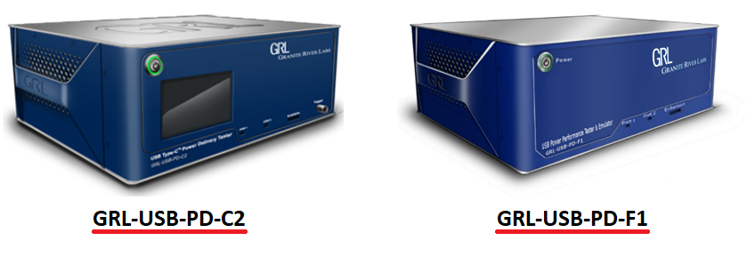
The GRL USB Type-C Power Delivery Tester and Analyzer (GRL-USB-PD-C2) is GRL's powerful USB Power Delivery (USB-PD) tester. GRL-USB-PD-C2 is approved by USB-IF for USB PD compliance testing. This document explains how to use GRL-USB-PD-C2 API's to create test cases to meet more customized test requirements.
Prerequisites
Following are the prerequisites for using the software:
-
This document assumes that users of API have knowledge on USB Power Delivery Specification
-
Knowledge of C# or Python to use the API
-
Visual Studio or any other IDE's
-
Laptop or PC with Windows 10 with minimum of 8GB of RAM
-
GRL-USB-PD-C2 Hardware
-
GRL-USB-PD-C2 software installed on the PC / Laptop
-
UUT (Unit under test)
Architecture
Custom test cases can be written in either C# or Python as independent standalone application. These test cases call the API's defined in GrlPdApiLib.dll and all the support functions and helper classes are defined in GrlPdLib.dll. The C2 Tester can emulate as provider, consumer and DRP devices.
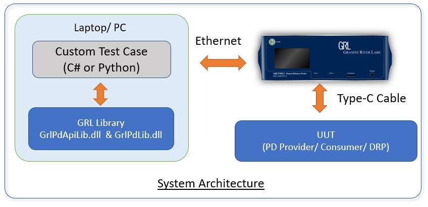
Hardware Setup
Following diagram illustrates the required hardware connection for using the API's along with the GRL-USB-PD-C2:
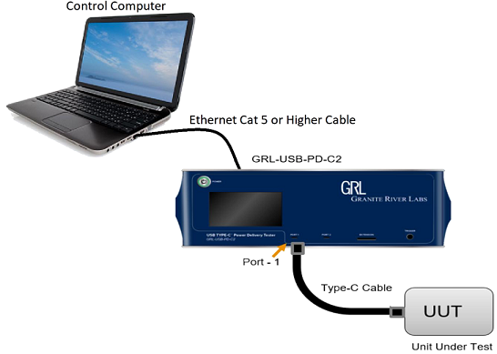
The GRL-USB-PD-C2 Software is loaded on a Windows 10 computer. Below is a procedure for connecting the hardware and computer.
-
Connect the GRL-USB-PD-C2 Power Interface using the 24V, 280W Power Brick included with the controller.
-
Connect the GRL-USB-PD-C2 Controller using a physical Ethernet connection between the computer and the controller.
-
The Ethernet port on the control computer needs to be configured correctly for the GRL-USB-PD-C2 controller to recognize the control computer and vice versa.
-
To make sure the network connection is set up correctly, goto Network Connections from the Control Panel on the computer.
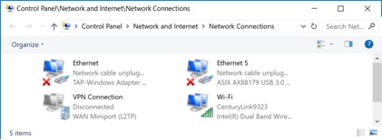
-
Open the Ethernet properties settings for the Ethernet port that will connect to the GRL-USB-PD-C2 controller, select “Internet Protocol Version 4 (TCP/IPv4)” and click on the “Properties” button below and to the right.
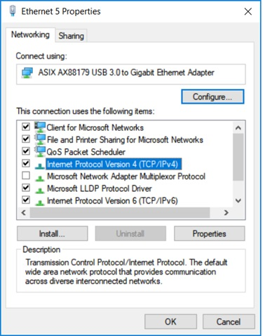
-
Set up the TCP/IPv4 properties as shown below and select “Use the following IP address:” to configure static IP address as 192.168.255.n where n is any number between 2 and 255. The subnet mask should be set as 255.255.255.0 and the default gateway as 192.168.255.1. The rest of the items will remain unchanged.
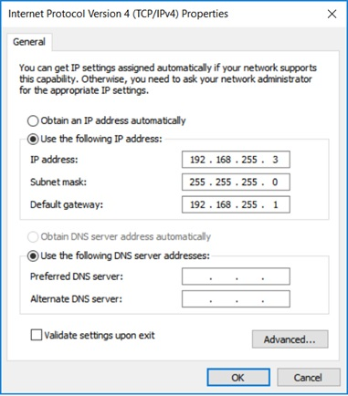
-
Once configured click the “OK” button and close the TCP/IPv4 Properties pop-up. Make sure the GRL-USB-PD-C2 Controller is powered on and completely booted up (front panel display showing firmware version number) and then connect the Ethernet cable from the GRL-USB-PD-C2 controller to the computer’s Ethernet port that was just set up. The Network Connections window should now appear as in the below image
-
The GRL-USB-PD-C2 Controller is now set up and ready for use.
-
Before running any tests, it is recommended that you verify both the control computer and the GRL-USB-PD-C2 Controller are communicating properly by using ping 192.168.255.1 from command line. <\ol>
Software Setup
You can create custom test cases using Python or C#. To create API programming you need the following software:
-
Python 2.7.15 (Windows x86 MSI installer) or Visual Studio 2017
-
GRL-USB-PD-C2 Software
-
Python PIP
-
If you want to use Python to create the custom test cases, install Python 2.7.15 (Windows x86 MSI installer) from https://www.python.org/downloads/release/python-2715/
Download the Python 2.7.15 installer and follow the on screen instructions to install the software
-
If you want to use C# to create the custom test cases install Visual Studio 2017 from https://visualstudio.microsoft.com/downloads/
Download the appropriate Visual Studio installer version and follow the on screen instructions to install the software.
-
All API libraries and helper functions are installed along with the GRL-USB-PD-C2 software. Download the GRL-USB-PD-C2 software from https://graniteriverlabs.com/download-center/ and follow the on screen instructions to install the software.
Development Environment Setup
Creating custom test cases in C#
To develop the application in C#, follow the below instructions:
- Open Visual Studio 2017 or higher.
- Create a console application in Visual Studio wizard from the [File] menu, select [New]-[Project…], and click on Windows Forms App (.NET Framework)" or "Console App (.NET Framework)".
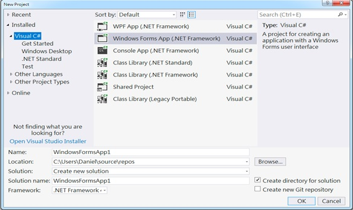
- Add references to GrlPdApiLib.dll and GrlPdLib.dll under the project "Reference".
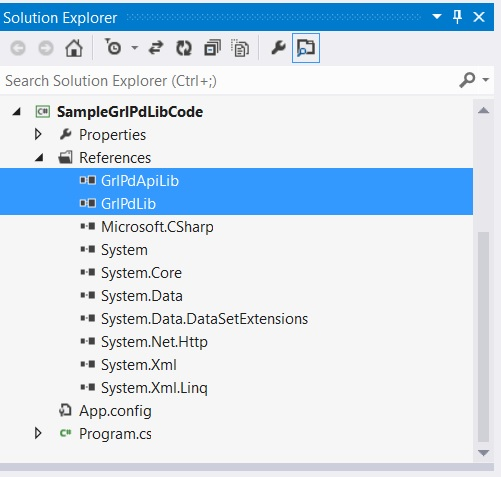
- You are now set for C# application development; refer to the sample code documentation for further details.
Creating custom test cases in Python
To develop the application in Python, follow the below instructions:
- Download and install version 2.7.15 of Python (Windows x86 MSI installer) from https://www.python.org/downloads/release/python-2715/
- Launch GRL-USB-PD-C2 Software from desktop icon "GRL-USB-PD-C2 Software"
- Navigate to Connection configuration panel and click on "Update Firmware" button and follow on screen instructions to upgrade the firmware
- Close the GRL-USB-PD-C2 Software
- Launch Python utility from desktop icon "GRL-USB-PD-C2 Python API Tool" or from API installation folder path C:\GRL\GRL-USB_PD_C2\API\GRL-USB-PD-C2 Python API Tool
- Refer existing Python sample scripts in C:\GRL\GRL-USB_PD_C2\API\Sample Scripts - Python
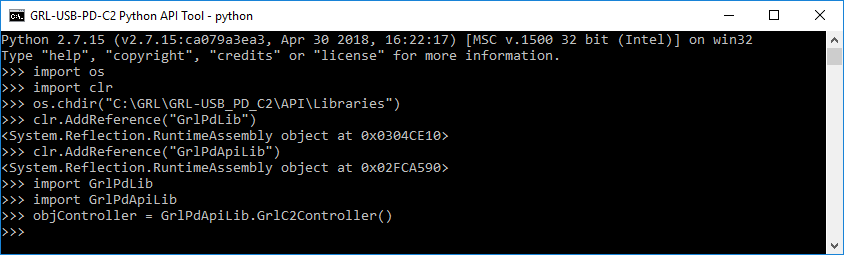
- If you find any issue in running Python scripts, you may try below steps and if still issue exist please report it to suppo.nosp@m.rt@g.nosp@m.ranit.nosp@m.eriv.nosp@m.erlab.nosp@m.s.co.nosp@m.m
- Add following Python installation paths to the system PATH variable C:\Python27; C:\Python27\Scripts ; C:\Python27\Lib.
- Download get-pip.py from https://pip.pypa.io/en/stable/installing/ and copy to C:\Python27.
- Open command prompt and navigate to C:\Python27. Type python get-pip.py to install PIP.
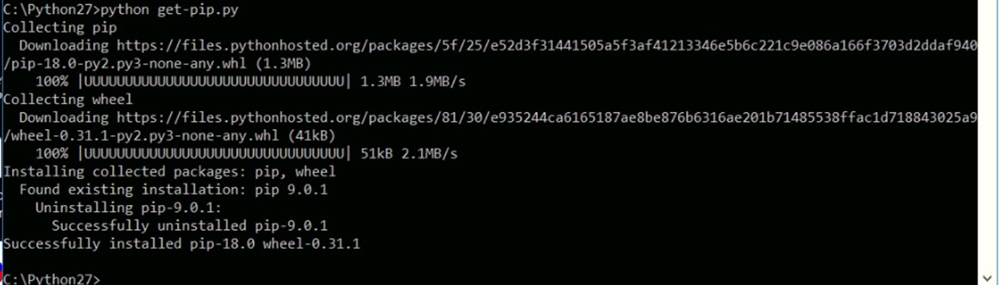
- Install pythonnet via PIP by using the "pip install pythonnet" command in command prompt.
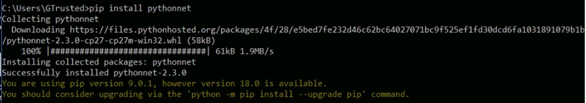
- You are now set for Python application development; refer to the sample code documentation for further details.

 1.8.17
1.8.17